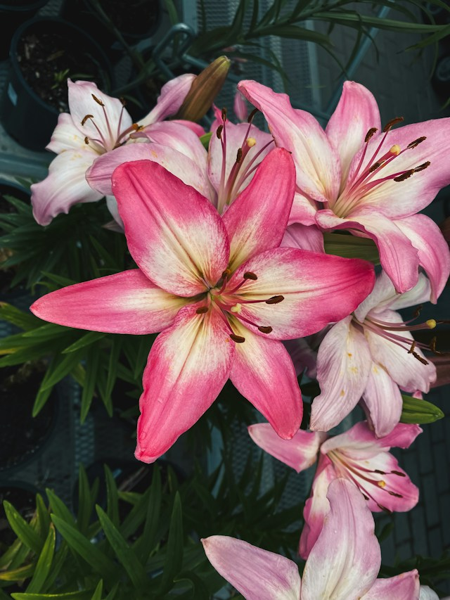
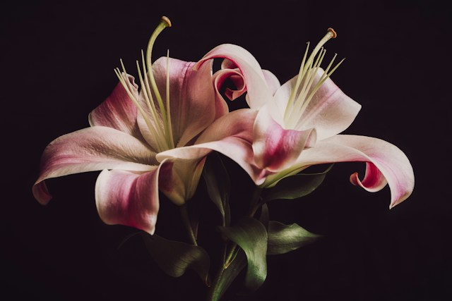
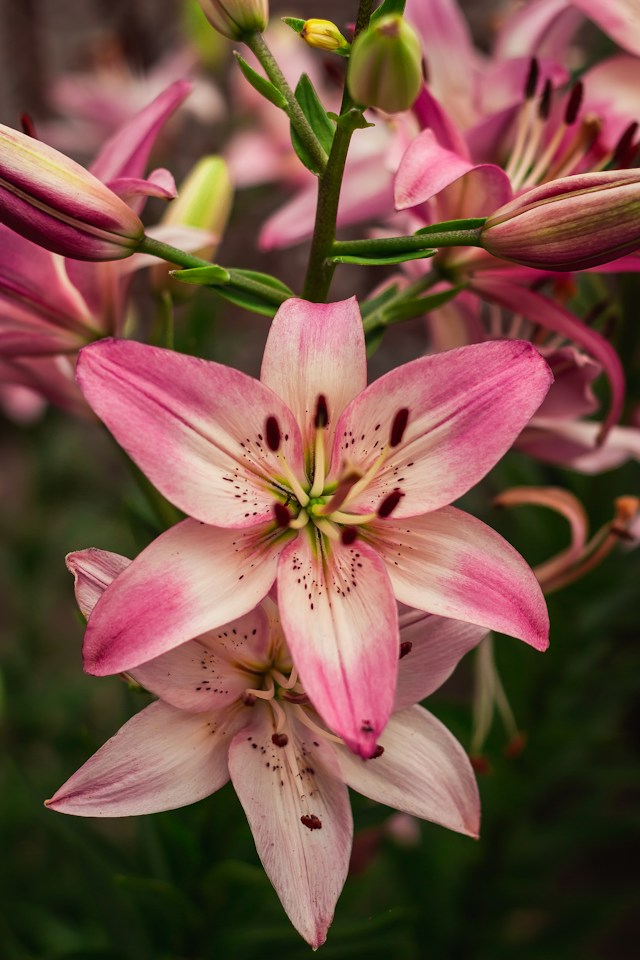

En vacker samling rosa liljor i olika nyanser av rosa och vitt. Blommornas stora kronblad har mjuka färgövergångar och naturliga detaljer som skapar ett levande och uttrycksfullt utseende. De mörkgröna bladen i bakgrunden framhäver blommornas ljusa färger och ger bilden en naturlig känsla. Kombinationen av färger och former skapar ett elegant men samtidigt färgstarkt intryck.

En stilren blomkomposition med rosa liljor som har mjukt böjda och vågiga kronblad. De ljusrosa och vita tonerna blandas med mörkare rosa detaljer, vilket ger blommorna ett djup och en fin kontrast. Den mörka bakgrunden gör att blommorna hamnar i fokus och framhäver deras unika former. Bilden ger ett romantiskt, exklusivt och nästan konstnärligt uttryck.

En rosa lilja står i full blom, omgiven av mjuka gröna blad.Kronbladen öppnar sig varsamt och fångar ljuset från den stilla morgonen.Små detaljer och fina färgskiftningar ger blomman ett levande uttryck.Mot den mörkgröna bakgrunden blir liljans rosa nyanser ännu tydligare.En lugn och vacker stund i naturen fångad i ett enda ögonblick.